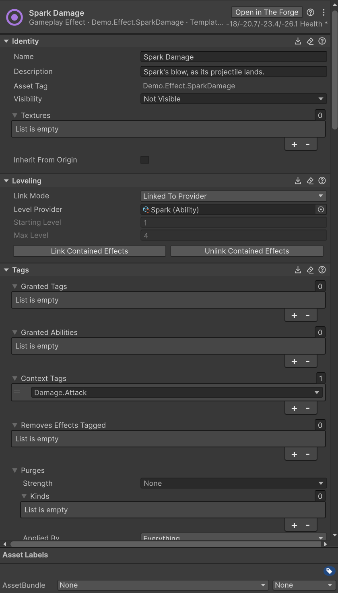

Inspectors
PlayForge draws an inspector of its own for each of its assets. It's the same in the Inspector and in The Forge's detail pane.

An effect's inspector, its sections with their help buttons.
This section covers the layout the inspectors share, each one's sections, and BasePlayForgeEditor, the base of the six
asset inspectors. Fields and drawers covers the fields inside them.
Each inspector takes Unity's own controls and PlayForge's style sheet, in the editor's light or dark theme. Each asset type has an icon in a color of its own, which is where the type's color shows.
In this section
- The header: An inspector opens with a header that stays at the top of the Inspector while the content scrolls under it.
- Sections: Under the header, an inspector's content is in sections.
- The six asset inspectors: Six inspectors edit PlayForge's main assets, with their sections in one order: Identity, Leveling and Tags, then the type's own, then Components, Workers and Local Data, and last Used By.
- The other inspectors: PlayForge's other assets, and every MonoBehaviour process, have inspectors of their own too.
BasePlayForgeEditor:BasePlayForgeEditoris the base of the six asset inspectors, aUnityEditor.Editor.